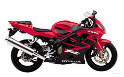
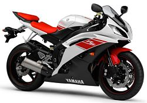
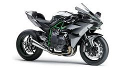

| FOTO |
MARCA |
DESCRIPCION |
|  |
HONDA |
Los japoneses dieron en el clavo al presentar una moto que servía para correr tandas en circuito los fines de semana, ir al trabajo con ella de lunes a viernes, y que también te valía para viajar con ella cuando cogías vacaciones.
Era la moto definitiva, la polivalencia absoluta de las sport turismo de los años 90 y que con el tiempo se perdió en el olvido en favor de las rabiosas súper deportivas y el nuevo estándar de polivalencia que hoy en día está ocupado por el concepto de trail asfáltica. |
|  |
YAMAHA |
Yamaha lanzó la YZF-R1 después de rediseñar el motor Génesis para crear un motor más compacto levantando el eje de entrada de la caja de cambios y permitiendo que el eje de salida de la caja de cambios se coloque debajo de él. A esta "caja de cambios apilada" le siguieron otros fabricantes. Compactar el motor hizo que el motor fuera mucho más corto, lo que permitió acortar la distancia entre ejes. Esto permitió que el diseño del bastidor colocara el peso del motor en el bastidor para facilitar el manejo debido a un centro de gravedad optimizado.. El basculante podría alargarse sin comprometer la distancia entre ejes total, que era de 1.385 mm (54,5 pulgadas). Cuatro carburadores Keihin CV de 40 mm alimentaban el motor con combustible. Tenía horquillas delanteras KYB invertidas de 41 mm y frenos de disco semiflotantes de 300 mm. El panel de instrumentos era eléctrico con sistema de autodiagnóstico y lectura de velocidad digital. El sistema de escape utilizaba la válvula de potencia máxima de escape (EXUP) de Yamaha , que controlaba el flujo de gases de escape para maximizar la producción de potencia del motor a todas las revoluciones. Esto creó un motor de alta potencia y alto par. La Yamaha YZF-R6 se introdujo en 1999 como la versión de 600 cc de la súper moto R1. |
|  |
KAWASAKI |
La Kawasaki Ninja H2 es una motocicleta de clase "superdeportiva sobrealimentada" [9] de la serie Ninja sportbike , fabricada por Kawasaki Heavy Industries , que cuenta con un sobrealimentador de tipo centrífugo de velocidad variable . [10] [11] [12] [13] La variante de pista exclusiva se llama Ninja H2R, y es la motocicleta de producción más rápida y potente del mercado; produce un máximo de 310 caballos de fuerza (230 kW) y 326 caballos de fuerza (243 kW) con aire comprimido. [2] El H2R tiene un 50% más de potencia que el más rápido legal en la calle. motocicletas, mientras que la Ninja H2 legal para la calle tiene una potencia de salida más baja de 200 hp (150 kW) [14] –210 hp (160 kW) con aire ram. [2]
Su homónima es la Kawasaki H2 Mach IV de 750 cc , [15] [16] una triple en línea que Kawasaki introdujo en 1972 para "interrumpir lo que consideraba un mercado de motocicletas durmientes" |